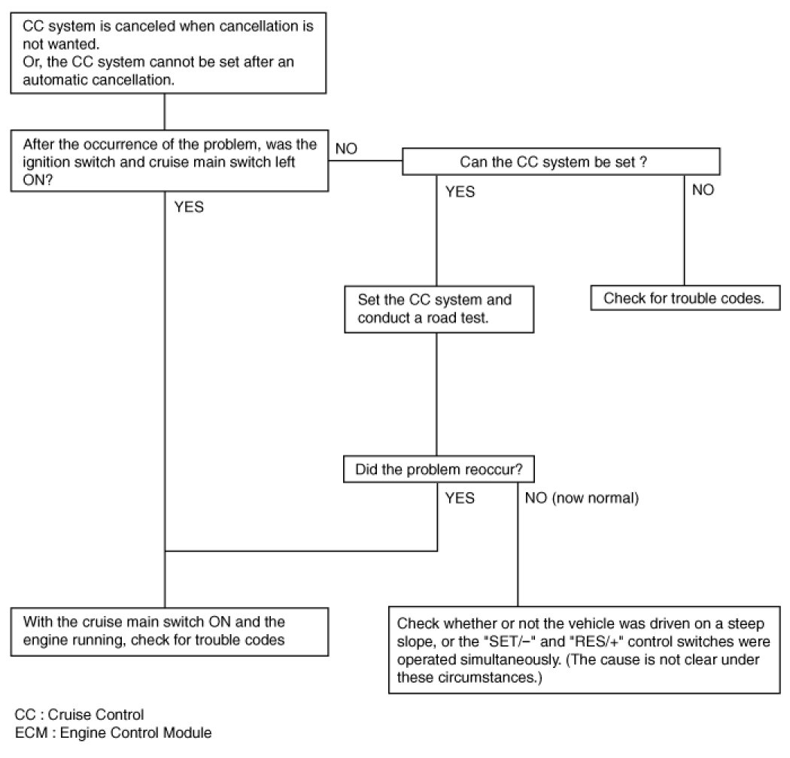
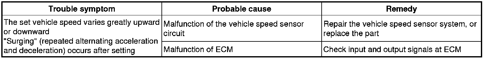
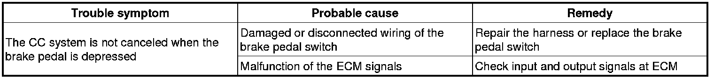
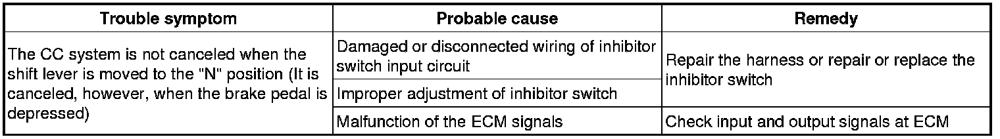
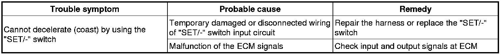
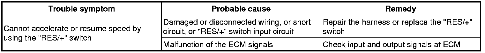
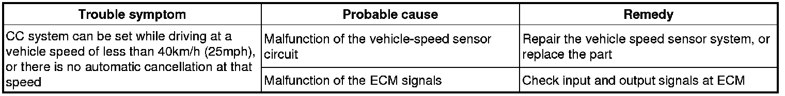
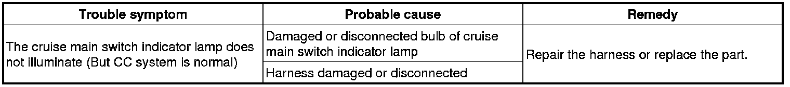

Cruise Control: Testing and Inspection
Trouble Symptom Charts
Trouble Symptom 1

Trouble Symptom 2

Trouble Symptom 3

Trouble Symptom 4

Trouble Symptom 5

Trouble Symptom 6

Trouble Symptom 7

Trouble Symptom 8
